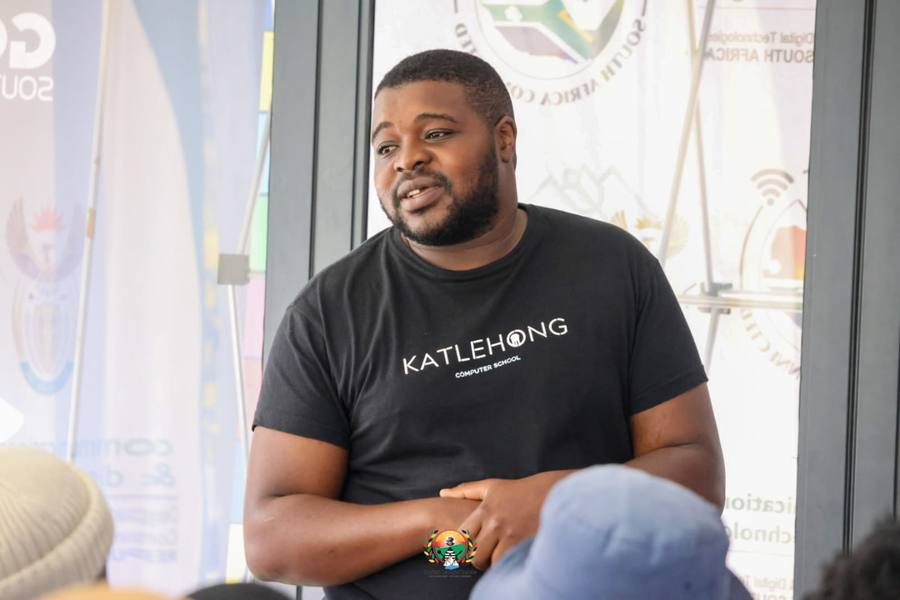

Open to full-time & freelance work — Katlehong, Gauteng, South Africa
Bruce
Massingue
IT Support Specialist & Network Technician
I keep networks running, machines repaired, and I teach the next generation of South African tech talent how to do the same — from help desks to hardware benches to full classrooms.
- 4+ yrs
- IT support & training
- 600+
- youth trained nationwide
- 7
- core certifications

About
I'm an IT support specialist and Cisco-trained network technician based in Katlehong, South Africa. Over the past several years I've repaired hardware, secured networks, and taught digital skills to hundreds of young people and adults through community and government-backed programmes across the country.
I like solving real problems — a laptop that won't boot, a network that keeps dropping, a classroom that's never touched a circuit board before. Whether I'm on a help desk, at a workbench, or in front of a room of new learners, I bring the same attention to detail and follow-through. Outside of formal roles, I run Bear Tech Solutions, my own IT support and training practice.
- 01IT SupportHelpdesk, hardware & software troubleshooting, Windows administration
- 02Networking & SecurityCCNA routing/switching, wireless design, CyberOps fundamentals
- 03Cloud & M365Microsoft 365 admin, Azure monitoring, Google Workspace
- 04Training & FacilitationDigital literacy, coding & robotics instruction, curriculum delivery
Selected work
Hardware repair, coding & robotics training, and community outreach from the past few years — filter by type.
Experience
Four years across community technology centres, youth development, and freelance technical work.
-
2026 —
PresentIT Technician / Trainer / Freelancer
Katlehong Computer School (NIBS)
- Deliver technical IT support training and coordinate organisational IT projects and student workshops.
- Provide diagnostic troubleshooting, component repairs, and OS maintenance across all devices.
- Manage Google Workspace administration, email configuration, and network troubleshooting.
-
2025 —
PresentFreelance IT & Technical Specialist
Self-employed — Bear Tech Solutions
- End-to-end technical support, website maintenance, and small office networking setup.
- Collaborate with the Department of Communications & Digital Technologies on youth empowerment initiatives.
- Design digital marketing collateral and visual assets for corporate and small-business clients.
-
2025
Technical Executive Manager
Technology Youth Development Agency (TYDA)
- Coordinated youth technical training programmes and maintained IT hardware/network infrastructure.
- Performed system repairs, Google Workspace administration, and domain management.
-
2022 —
2025IT Technician / Trainer / Facilitator
Siyafunda Community Technology Centre
- Facilitated Cisco IT Essentials training modules and oversaw project delivery for student cohorts.
- Administered Microsoft 365, Google Workspace, domain controls and user security.
- Served as Esports Manager — gaming network infrastructure, hardware optimisation, tournament operations.
-
2020 —
2021Carpenter Assistant
G & J Kitchens
- Assembled wood components and constructed custom kitchen units using precision tooling.
Skills
Technical
Training
Certifications
Networking, Wireless & Hardware
| CCNA: Switching, Routing & Wireless Essentials | Cisco NetAcad · 2026 |
| ECSE Design (Ekahau Certified Solutions Engineer) | Ekahau · 2025 |
| CompTIA A+ 1000 — Part 2 | Alison · 2026 |
| Computer Networking — Digital Network Security | Alison · 2024 |
Cybersecurity
| CyberOps Associate | Cisco Networking Academy · 2026 |
| Fortinet Certified Fundamentals — Cybersecurity | Fortinet |
| Cybersecurity Essentials | Cisco Networking Academy |
Cloud, M365 & Project Management
| Azure Monitoring Tools | Microsoft · 2026 |
| Microsoft 365 Productivity Solutions | Microsoft |
| Foundations of Project Management | |
| AI-Augmented Professional Development | ALX Africa |
Impact so far
600+
youth trained nationwide through the 16 Days of Activism digital-literacy outreach programme
200+
participants trained in hardware diagnostics and PC assembly through the Hardware Basics Boot Camp
2
industry awards — Most Innovative Facilitator (2025), Cisco Academy Active Service Award (2024)
4
languages spoken with learners and clients — English, Zulu, Xitsonga, Portuguese
Bear Tech Solutions
We specialize in technology.
My own IT practice, alongside my full-time and freelance training work — for individuals and small businesses that need reliable, hands-on tech help.
Home visits available — a call-out fee applies outside Katlehong.
Get a quoteLet's talk
Open to IT support roles, network technician positions, ICT training work, and freelance projects. Reach out any time — I usually reply within a day.